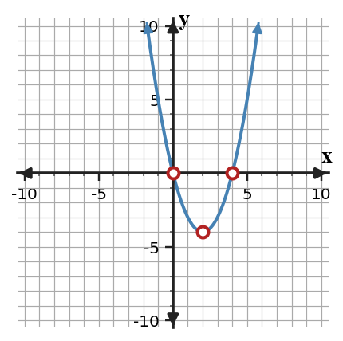
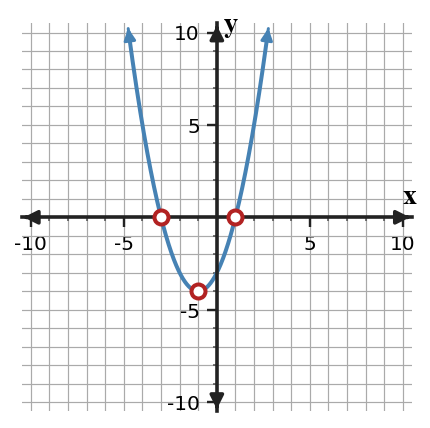
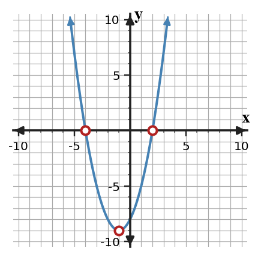
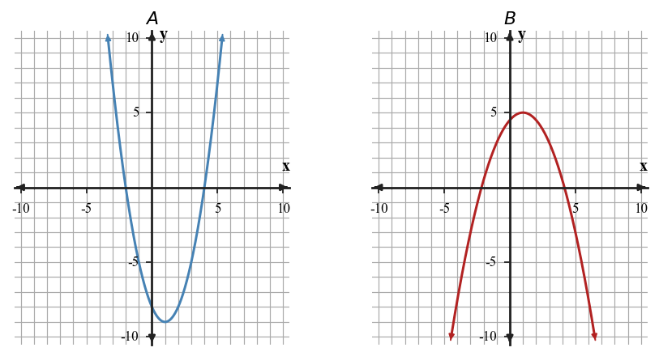
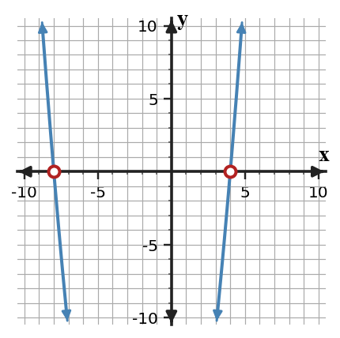

Polynomial Structure and Quadratic Graphs
Mathematical idea: Different quadratic forms reveal different graph features such as vertex, intercepts, and axis of symmetry.
Today you will use vertex form, factored form, graphs, and tables to identify quadratic features. You will also choose which form is most useful for a question.
Learning Target
Learning Target: Students will connect polynomial expressions to quadratic graphs and key features.
I can statements
- I can construct connections between polynomial structure, quadratic graphs, and key features.
- I can predict graph features from equivalent quadratic expressions.
- I can critique whether a polynomial expression supports a claimed vertex, intercept, axis of symmetry, or direction of opening.
What's To Come
This is a long-range preview for future lessons. Do not solve it today. Instead, annotate it individually. Circle anything familiar, underline symbols or directions that seem important, and write notes about what information you think will be needed later.
As you annotate, ask yourself: What parts (words, symbols, graphs) do you KNOW? What parts look FAMILIAR? What parts look like jibberish?
Design a short quadratic context with maximum value $36$ at input $3$, then write an equation in vertex form and identify two meaningful points on the graph.
Intro
Directions
Read the introduction aloud with a partner or in a small group. As you read, annotate the text by highlighting important ideas, circling key vocabulary, and writing short notes about connections, questions, or predictions in the margins.
Quadratic expressions can be written in forms that highlight different graph features. Vertex form makes the vertex easiest to see. In $y=(x-h)^2+k$, the vertex is $(h,k)$.
Factored form shows the input values that make the output zero. In $y=(x-a)(x-b)$, the zeros are $a$ and $b$, so the graph crosses the $x$-axis at those inputs. Those intercepts also help locate the axis of symmetry halfway between them.
A single quadratic can be rewritten without changing its graph. One form may make a vertex obvious, while another form may make intercepts obvious. The best form depends on the feature or context question you are trying to answer.
Key representations include equivalent quadratic expressions, parabolas with vertices and intercepts, tables showing quadratic patterns, and factored or expanded forms. Each representation can confirm or challenge a claim about a graph feature.
In modeling, expression structure helps you choose a useful strategy. A projectile question about maximum height may favor vertex form, while a question about when an object hits the ground may favor factored form.
Stop and Discuss
- What feature is easiest to see from vertex form?
- What feature is easiest to see from factored form?
- Why can two different forms of a quadratic both be useful?
Vertex form identifies the turning point of a quadratic.
For $y=(x-2)^2-4$, the vertex is $(2,-4)$ because the squared part is smallest when $x=2$.
| $x$ | 0 | 1 | 2 | 3 | 4 |
|---|---|---|---|---|---|
| $y$ | 0 | -3 | -4 | -3 | 0 |

Context: If $y$ is height, the vertex can represent a minimum or maximum height depending on the direction the parabola opens.
Example 1: Identify a Vertex
Consider the quadratic $y=(x+4)^2-1$.
- Identify the vertex.
- State whether the graph opens up or down.
- Explain how the equation shows the vertex without making a full table.
You Try It 1: Identify a Vertex
Consider the quadratic $y=(x-5)^2+3$.
- Identify the vertex.
- State whether the graph opens up or down.
- Explain how the equation shows the vertex without making a full table.
Stop and Discuss
- What information does vertex form make visible immediately?
Factored form identifies where a quadratic has output zero.
For $y=(x+3)(x-1)$, the zeros are $x=-3$ and $x=1$ because each factor can equal zero.
| Feature | Value | How the form shows it |
|---|---|---|
| $x$-intercepts | $(-3,0)$ and $(1,0)$ | each factor equals zero |
| Axis of symmetry | $x=-1$ | halfway between the zeros |
| Vertex | $(-1,-4)$ | on the axis of symmetry |

Context: In a path model, zeros can mean times when the height is 0.
Example 2: Use Graph Features to Choose a Form
Use the graph to identify key features of the quadratic.

- Identify the vertex and the $x$-intercepts.
- Write a possible factored-form equation.
- Explain how the graph features constrain your equation.
You Try It 2: Use Graph Features to Choose a Form
A quadratic graph has $x$-intercepts at $-2$ and $6$ and opens upward.
- Identify the axis of symmetry.
- Write a possible factored-form equation.
- Explain how the intercepts constrain your equation.
Stop and Discuss
- How did the intercepts help you write factored form?
Example 3: Compare Useful Quadratic Forms
Compare the two quadratic graphs. Decide which form would be more useful for each graph feature question.

- For Graph A, would factored form or vertex form be more useful for finding intercepts?
- For Graph B, would factored form or vertex form be more useful for finding the maximum or minimum?
- Explain why the best form depends on the feature you need.
You Try It 3: Compare Useful Quadratic Forms
One quadratic model is written as $y=(x-7)(x+1)$. Another is written as $y=-2(x-3)^2+12$.
- Which form is more useful for finding zeros?
- Which form is more useful for finding a maximum or minimum?
- Explain why rewriting may be helpful but is not always necessary.
Stop and Discuss
- Why might two equivalent equations be useful for different questions?
The axis of symmetry can be found from zeros or from expanded form.
For $y=(x-4)(x+8)$, the zeros are $4$ and $-8$, so the axis is halfway between them: $$x=\frac{4+(-8)}{2}=-2.$$
Expanded form gives $y=x^2+4x-32$, so $$x=\frac{-b}{2a}=\frac{-4}{2(1)}=-2.$$

Context: The axis identifies the input where the quadratic reaches its turning point.
Example 4: Find the Axis Two Ways
Two methods can find the axis of symmetry for $y=(x-4)(x+8)$.
- Find the axis using the zeros.
- Expand the expression and find the axis using $x=\frac{-b}{2a}$.
- Compare the results and explain why they match.
You Try It 4: Find the Axis Two Ways
Two methods can find the axis of symmetry for $y=(x+2)(x-10)$.
- Find the axis using the zeros.
- Expand the expression and find the axis using $x=\frac{-b}{2a}$.
- Compare the results and explain why they match.
Stop and Discuss
- How do the zero method and expanded-form method connect?
Summary
You connected polynomial structure to quadratic graph features. Different forms reveal different information about the same parabola.
Vertex form highlights the vertex, factored form highlights zeros, and expanded form can support calculations such as the axis of symmetry. Graphs and tables can confirm whether the features match the expression.
A common error is using a form that does not directly show the feature being asked for.
Strong understanding means you can choose a useful form, justify graph features from structure, and critique claims about a quadratic model.
Common Mistakes
- Misreading vertex form. Why it is tempting: the sign inside the parentheses looks direct. What to check instead: identify the input that makes the square zero.
- Assuming expanded form shows zeros. Why it is tempting: standard form looks complete. What to check instead: factor or use another method to find intercepts.
- Forgetting axis halfway between zeros. Why it is tempting: zeros are endpoints on the graph. What to check instead: average the two zero inputs.
- Choosing the wrong form. Why it is tempting: one form feels familiar. What to check instead: match the form to the feature you need.
- Ignoring opening direction. Why it is tempting: intercepts and vertex get attention first. What to check instead: check the sign of the leading coefficient or vertical factor.
Optional Future Task Reflection
Look back at the future task. Do not solve it yet. Highlight one part that makes more sense now than it did at the beginning. Circle one part that still feels unfamiliar. Write one sentence about what representation you would look at first.
For $y=(x-3)^2+2$, identify the vertex.
Use the graph to identify the vertex, axis of symmetry, and $x$-intercepts of the quadratic. Then write a possible factored-form equation and explain how the graph features constrain it.

What is one idea about polynomial structure and quadratic graphs you understand better now than at the start of class? Write at least one complete sentence.
What is one thing about polynomial structure and quadratic graphs you still want to understand or practice? Be specific — name the idea, not just "everything."